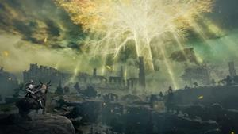
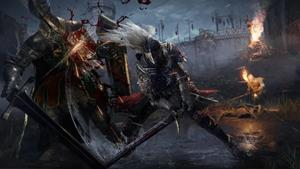
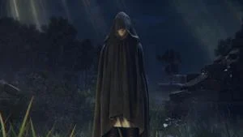

The Lands Between is the world of Elden Ring, and those who live in The Lands Between were blessed by Grace through the Elden Ring and the Erdtree. Those who were blessed by the Elden Ring are characterized by having a golden aura that can be seen in their eyes. However, at some point, some of those who were blessed lost their grace; they were exiled and labeled the Tarnished. As time passed, for unknown reasons, the Elden Ring was shattered and its shards were scattered across the Lands Between. The largest of these pieces were called Great Runes and were claimed by the six Demigod children of Queen Marika the Eternal, causing them to inherit different powers and have been physically changed and twisted due to being corrupted by the power of these runes.
In the opening of the official reveal trailer that was presented in E3 2021, we see a softly spoken, hooded woman saying "The Tarnished, will soon return." The question is, who and what is The Tarnished? Simply put, you are the Tarnished. As the player, you are one of the Tarnished that have been exiled upon losing their blessing of Grace granted by the Elden Ring and the Erdtree, a tree that hosts source and life of The Lands Between. Very much like previous Souls games, where you are the Chosen Undead or the Ashen One. After the shattering of the Elden Ring, you are then called back by this lost Grace to The Lands Between, along with other Tarnished to recover the shards of the Elden Ring, to make them whole once again, and to become the Elden Lord of The Lands Between.
One of the first people the Tarnished encounters on their journey, Melina maintains an air of mystery throughout the game. She does not have a physical form and acts as the Tarnished's Finger Maiden in exchange for taking her to the Erdtree, then later on, to the Mountaintops of the Giants. She approaches the Tarnished to aid her in her search for her purpose given to her by her mother, who she believes can be found at the base of the Erdtree, leading many to speculate that her mother is Marika. When summoned, she wields the Blade of Calling, a dagger that was previously owned by the kindling maiden, fitting considering her role as kindling when the Erdtree is burnt down. Speaking with Melina at various Sites of Grace reveals her ability to recall echoes of Queen Marika's past actions and words, which she offers in lieu of a "maiden's guidance".
